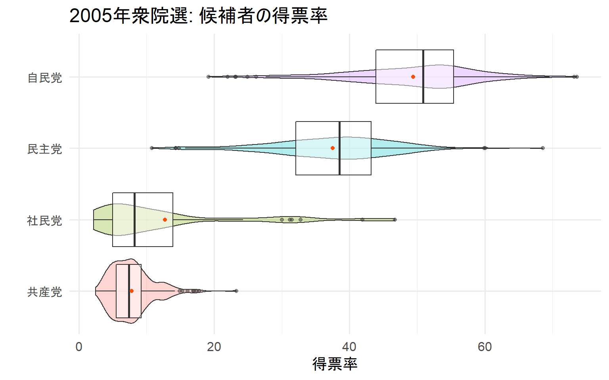

Boxplot
2021-02-20 22:57:21
1 使用するパッケージ
library(tidyverse)
library(magrittr)2 ggplot2 の theme をあらかじめ設定しておく
theme_set(theme_minimal(base_size = 15))4 データ内の変数名を確認する
names(data) [1] "year" "ku" "kun" "status" "name"
[6] "party" "party_code" "previous" "wl" "voteshare"
[11] "age" "nocand" "rank" "vote" "eligible"
[16] "turnout" "exp" "expm" "vs" "exppv"
[21] "smd" "party_jpn" 5 2015年にデータを絞る
data_2005 <- data %>% filter(year == 2005) %>% drop_na() # 2005年のデータに絞る6 上位4政党に絞る
今回は簡単のために上位4政党に絞る。
data_2005 %>%
ggplot(aes(x = party_jpn)) +
geom_bar() +
labs(x = "")
data_2005 %<>% filter(party_jpn %in% c("自民党", "民主党", "社民党", "共産党"))7 箱ひげ図
7.1 何の変哲もない箱ひげ図
pointは外れ値を表す。
data_2005 %>%
ggplot(aes(x = party_jpn, y = voteshare)) +
geom_boxplot() +
labs(x = "", y = "得票率", title = "2005年衆院選: 候補者の得票率") 7.2 x軸の順番を入れ替える
箱ひげ図で複数のクラスタを比較する際は、medianが小さい順に並べたほうが見やすい。 ただ、棒グラフと違って、fct_reoder()は順序的な意味合いを持たないfactor型には使えないため、 transform(x = factor(x ,levels = c("hoge1", "hoge2", "hoge3")))で並び替えを行う。
data_2005 %>%
transform(party_jpn = factor(party_jpn ,levels = c("共産党", "社民党", "民主党", "自民党"))) %>%
ggplot(aes(x = party_jpn, y = voteshare)) +
geom_boxplot() +
labs(x = "", y = "得票率", title = "2005年衆院選: 候補者の得票率") 
7.3 クラスタごとに色を付ける
クラスタごとに色を付けると、より視認性が向上する（と思う…）。 scale_fill_manual(values = c("color1", "color2", "color3", "color4"))で、4色指定すれば自由に色を付けられる。 Githubのレポジトリの中にカラーリストを入れたので、興味のある人は遊んでみて。
data_2005 %>%
transform(party_jpn = factor(party_jpn ,levels = c("共産党", "社民党", "民主党", "自民党"))) %>%
ggplot(aes(x = party_jpn, y = voteshare)) +
geom_boxplot(aes(fill = party_jpn), show.legend = F) +
labs(x = "", y = "得票率", title = "2005年衆院選: 候補者の得票率") 
7.4 平均値を付け加える
たまにt検定とかすると、「平均値も一緒に見たいなぁ」と思うこともある。そのときは以下のようにすれば、平均値も確認できる。
社民党の平均値とmedianに開きがあるようだ。もしかしたらヒストグラムに歪みがあるかも。
data_2005 %>%
transform(party_jpn = factor(party_jpn ,levels = c("共産党", "社民党", "民主党", "自民党"))) %>%
ggplot(aes(x = party_jpn, y = voteshare)) +
geom_boxplot(aes(fill = party_jpn), show.legend = F) +
labs(x = "", y = "得票率", title = "2005年衆院選: 候補者の得票率") +
stat_summary(fun = mean, geom = "point", color = "#FC4E07") 
7.5 バイオリンプロット
バイオリンプロットを一緒に描くことで、データの分布を確認しながら要約統計量を見ることができる。 社民党の得票率は右方向に裾野が広い分布ため、平均値とmedianが離れていたようだ。 共産党はあまりデータにばらつきが無いように見える。
data_2005 %>%
transform(party_jpn = factor(party_jpn ,levels = c("共産党", "社民党", "民主党", "自民党"))) %>%
ggplot(aes(x = party_jpn, y = voteshare)) +
geom_violin(aes(fill = party_jpn), alpha = 0.3, show.legend = F) +
geom_boxplot(alpha = .5, show.legend = F) +
labs(x = "", y = "得票率", title = "2005年衆院選: 候補者の得票率") +
stat_summary(fun = mean, geom = "point", color = "#FC4E07") +
coord_flip()
この記事のコードをまとめたものはGithubにあります。
LS0tDQp0aXRsZTogIkJveHBsb3QiDQpkYXRlOiAiYHIgU3lzLnRpbWUoKWAiDQotLS0NCg0KYGBge3IsIGluY2x1ZGU9RkFMU0V9DQprbml0cjo6b3B0c19jaHVuayRzZXQod2FybmluZyA9IEYsDQogICAgICAgICAgICAgICAgICAgICAgbWVzc2FnZSA9IEYsDQogICAgICAgICAgICAgICAgICAgICAgY29tbWVudCA9ICIiLA0KICAgICAgICAgICAgICAgICAgICAgIGZpZy5hbGlnbiA9ICJjZW50ZXIiKQ0KYGBgDQoNCiMg5L2/55So44GZ44KL44OR44OD44Kx44O844K4DQoNCmBgYHtyfQ0KbGlicmFyeSh0aWR5dmVyc2UpDQpsaWJyYXJ5KG1hZ3JpdHRyKQ0KYGBgDQoNCiMgZ2dwbG90MiDjga4gdGhlbWUg44KS44GC44KJ44GL44GY44KB6Kit5a6a44GX44Gm44GK44GPDQoNCmBgYHtyfQ0KdGhlbWVfc2V0KHRoZW1lX21pbmltYWwoYmFzZV9zaXplID0gMTUpKQ0KYGBgDQoNCiMg5L2/55So44GZ44KL44OH44O844K/DQoNCuODh+ODvOOCv+OBr1vjgZPjgaHjgoldKC4vZGF0YS9Ib3VzZV9vZl9Db3VuY2lsb3JzXzE5OTZfMjAxNy5jc3YpDQoNCmBgYHtyfQ0KZGF0YSA8LSByZWFkX2NzdigiRGF0YS9Ib3VzZV9vZl9Db3VuY2lsb3JzXzE5OTZfMjAxNy5jc3YiKQ0KYGBgDQoNCiMg44OH44O844K/5YaF44Gu5aSJ5pWw5ZCN44KS56K66KqN44GZ44KLDQoNCmBgYHtyfQ0KbmFtZXMoZGF0YSkNCmBgYA0KDQojIDIwMTXlubTjgavjg4fjg7zjgr/jgpLntZ7jgosNCg0KYGBge3J9DQpkYXRhXzIwMDUgPC0gZGF0YSAlPiUgZmlsdGVyKHllYXIgPT0gMjAwNSkgJT4lIGRyb3BfbmEoKSAjIDIwMDXlubTjga7jg4fjg7zjgr/jgavntZ7jgosNCmBgYA0KDQojIOS4iuS9jTTmlL/lhZrjgavntZ7jgosNCg0K5LuK5Zue44Gv57Ch5Y2Y44Gu44Gf44KB44Gr5LiK5L2NNOaUv+WFmuOBq+e1nuOCi+OAgg0KDQpgYGB7cn0NCmRhdGFfMjAwNSAlPiUgDQogIGdncGxvdChhZXMoeCA9IHBhcnR5X2pwbikpICsNCiAgZ2VvbV9iYXIoKSArDQogIGxhYnMoeCA9ICIiKQ0KYGBgDQoNCmBgYHtyfQ0KZGF0YV8yMDA1ICU8PiUgZmlsdGVyKHBhcnR5X2pwbiAlaW4lIGMoIuiHquawkeWFmiIsICLmsJHkuLvlhZoiLCAi56S+5rCR5YWaIiwgIuWFseeUo+WFmiIpKQ0KYGBgDQoNCiMg566x44Gy44GS5ZuzDQoNCiMjIOS9leOBruWkieWTsuOCguOBquOBhOeuseOBsuOBkuWbsw0KDQpwb2ludOOBr+WkluOCjOWApOOCkuihqOOBmeOAgg0KDQpgYGB7cn0NCmRhdGFfMjAwNSAlPiUgDQogIGdncGxvdChhZXMoeCA9IHBhcnR5X2pwbiwgeSA9IHZvdGVzaGFyZSkpICsNCiAgZ2VvbV9ib3hwbG90KCkgKw0KICBsYWJzKHggPSAiIiwgeSA9ICLlvpfnpajnjociLCB0aXRsZSA9ICIyMDA15bm06KGG6Zmi6YG4OiDlgJnoo5zogIXjga7lvpfnpajnjociKSANCmBgYA0KDQojIyB46Lu444Gu6aCG55Wq44KS5YWl44KM5pu/44GI44KLDQoNCueuseOBsuOBkuWbs+OBp+ikh+aVsOOBruOCr+ODqeOCueOCv+OCkuavlOi8g+OBmeOCi+mam+OBr+OAgW1lZGlhbuOBjOWwj+OBleOBhOmghuOBq+S4puOBueOBn+OBu+OBhuOBjOimi+OChOOBmeOBhOOAgg0K44Gf44Gg44CB5qOS44Kw44Op44OV44Go6YGV44Gj44Gm44CBYGZjdF9yZW9kZXIoKWDjga/poIbluo/nmoTjgarmhI/lkbPlkIjjgYTjgpLmjIHjgZ/jgarjgYRmYWN0b3Llnovjgavjga/kvb/jgYjjgarjgYTjgZ/jgoHjgIENCmB0cmFuc2Zvcm0oeCA9IGZhY3Rvcih4ICxsZXZlbHMgPSBjKCJob2dlMSIsICJob2dlMiIsICJob2dlMyIpKSlg44Gn5Lim44Gz5pu/44GI44KS6KGM44GG44CCDQoNCmBgYHtyfQ0KZGF0YV8yMDA1ICU+JSANCiAgdHJhbnNmb3JtKHBhcnR5X2pwbiA9IGZhY3RvcihwYXJ0eV9qcG4gLGxldmVscyA9IGMoIuWFseeUo+WFmiIsICLnpL7msJHlhZoiLCAi5rCR5Li75YWaIiwgIuiHquawkeWFmiIpKSkgJT4lDQogIGdncGxvdChhZXMoeCA9IHBhcnR5X2pwbiwgeSA9IHZvdGVzaGFyZSkpICsNCiAgZ2VvbV9ib3hwbG90KCkgKw0KICBsYWJzKHggPSAiIiwgeSA9ICLlvpfnpajnjociLCB0aXRsZSA9ICIyMDA15bm06KGG6Zmi6YG4OiDlgJnoo5zogIXjga7lvpfnpajnjociKSANCmBgYA0KDQojIyDjgq/jg6njgrnjgr/jgZTjgajjgavoibLjgpLku5jjgZHjgosNCg0K44Kv44Op44K544K/44GU44Go44Gr6Imy44KS5LuY44GR44KL44Go44CB44KI44KK6KaW6KqN5oCn44GM5ZCR5LiK44GZ44KL77yI44Go5oCd44GGLi4u77yJ44CCDQpgc2NhbGVfZmlsbF9tYW51YWwodmFsdWVzID0gYygiY29sb3IxIiwgImNvbG9yMiIsICJjb2xvcjMiLCAiY29sb3I0IikpYOOBp+OAgTToibLmjIflrprjgZnjgozjgbDoh6rnlLHjgavoibLjgpLku5jjgZHjgonjgozjgovjgIINCltHaXRodWJdKGh0dHBzOi8vZ2l0aHViLmNvbS9GcnVpdEdyYW5vbGEvUl9Cb3hwbG90KeOBruODrOODneOCuOODiOODquOBruS4reOBq+OCq+ODqeODvOODquOCueODiOOCkuWFpeOCjOOBn+OBruOBp+OAgeiIiOWRs+OBruOBguOCi+S6uuOBr+mBiuOCk+OBp+OBv+OBpuOAgg0KDQpgYGB7cn0NCmRhdGFfMjAwNSAlPiUgDQogIHRyYW5zZm9ybShwYXJ0eV9qcG4gPSBmYWN0b3IocGFydHlfanBuICxsZXZlbHMgPSBjKCLlhbHnlKPlhZoiLCAi56S+5rCR5YWaIiwgIuawkeS4u+WFmiIsICLoh6rmsJHlhZoiKSkpICU+JQ0KICBnZ3Bsb3QoYWVzKHggPSBwYXJ0eV9qcG4sIHkgPSB2b3Rlc2hhcmUpKSArDQogIGdlb21fYm94cGxvdChhZXMoZmlsbCA9IHBhcnR5X2pwbiksIHNob3cubGVnZW5kID0gRikgKw0KICBsYWJzKHggPSAiIiwgeSA9ICLlvpfnpajnjociLCB0aXRsZSA9ICIyMDA15bm06KGG6Zmi6YG4OiDlgJnoo5zogIXjga7lvpfnpajnjociKSANCmBgYA0KDQojIyDlubPlnYflgKTjgpLku5jjgZHliqDjgYjjgosNCg0K44Gf44G+44GrdOaknOWumuOBqOOBi+OBmeOCi+OBqOOAgeOAjOW5s+Wdh+WApOOCguS4gOe3kuOBq+imi+OBn+OBhOOBquOBgeOAjeOBqOaAneOBhuOBk+OBqOOCguOBguOCi+OAguOBneOBruOBqOOBjeOBr+S7peS4i+OBruOCiOOBhuOBq+OBmeOCjOOBsOOAgeW5s+Wdh+WApOOCgueiuuiqjeOBp+OBjeOCi+OAgg0KDQrnpL7msJHlhZrjga7lubPlnYflgKTjgahtZWRpYW7jgavplovjgY3jgYzjgYLjgovjgojjgYbjgaDjgILjgoLjgZfjgYvjgZfjgZ/jgonjg5Ljgrnjg4jjgrDjg6njg6Djgavmrarjgb/jgYzjgYLjgovjgYvjgoLjgIINCg0KYGBge3J9DQpkYXRhXzIwMDUgJT4lIA0KICB0cmFuc2Zvcm0ocGFydHlfanBuID0gZmFjdG9yKHBhcnR5X2pwbiAsbGV2ZWxzID0gYygi5YWx55Sj5YWaIiwgIuekvuawkeWFmiIsICLmsJHkuLvlhZoiLCAi6Ieq5rCR5YWaIikpKSAlPiUNCiAgZ2dwbG90KGFlcyh4ID0gcGFydHlfanBuLCB5ID0gdm90ZXNoYXJlKSkgKw0KICBnZW9tX2JveHBsb3QoYWVzKGZpbGwgPSBwYXJ0eV9qcG4pLCBzaG93LmxlZ2VuZCA9IEYpICsNCiAgbGFicyh4ID0gIiIsIHkgPSAi5b6X56Wo546HIiwgdGl0bGUgPSAiMjAwNeW5tOihhumZoumBuDog5YCZ6KOc6ICF44Gu5b6X56Wo546HIikgKw0KICBzdGF0X3N1bW1hcnkoZnVuID0gbWVhbiwgZ2VvbSA9ICJwb2ludCIsIGNvbG9yID0gIiNGQzRFMDciKSANCmBgYA0KDQojIyDjg5DjgqTjgqrjg6rjg7Pjg5fjg63jg4Pjg4gNCg0K44OQ44Kk44Kq44Oq44Oz44OX44Ot44OD44OI44KS5LiA57eS44Gr5o+P44GP44GT44Go44Gn44CB44OH44O844K/44Gu5YiG5biD44KS56K66KqN44GX44Gq44GM44KJ6KaB57SE57Wx6KiI6YeP44KS6KaL44KL44GT44Go44GM44Gn44GN44KL44CCDQrnpL7msJHlhZrjga7lvpfnpajnjofjga/lj7PmlrnlkJHjgavoo77ph47jgYzluoPjgYTliIbluIPjgZ/jgoHjgIHlubPlnYflgKTjgahtZWRpYW7jgYzpm6LjgozjgabjgYTjgZ/jgojjgYbjgaDjgIINCuWFseeUo+WFmuOBr+OBguOBvuOCiuODh+ODvOOCv+OBq+OBsOOCieOBpOOBjeOBjOeEoeOBhOOCiOOBhuOBq+imi+OBiOOCi+OAgg0KDQpgYGB7cn0NCmRhdGFfMjAwNSAlPiUgDQogIHRyYW5zZm9ybShwYXJ0eV9qcG4gPSBmYWN0b3IocGFydHlfanBuICxsZXZlbHMgPSBjKCLlhbHnlKPlhZoiLCAi56S+5rCR5YWaIiwgIuawkeS4u+WFmiIsICLoh6rmsJHlhZoiKSkpICU+JQ0KICBnZ3Bsb3QoYWVzKHggPSBwYXJ0eV9qcG4sIHkgPSB2b3Rlc2hhcmUpKSArDQogIGdlb21fdmlvbGluKGFlcyhmaWxsID0gcGFydHlfanBuKSwgYWxwaGEgPSAwLjMsIHNob3cubGVnZW5kID0gRikgKw0KICBnZW9tX2JveHBsb3QoYWxwaGEgPSAuNSwgc2hvdy5sZWdlbmQgPSBGKSArDQogIGxhYnMoeCA9ICIiLCB5ID0gIuW+l+elqOeOhyIsIHRpdGxlID0gIjIwMDXlubTooYbpmaLpgbg6IOWAmeijnOiAheOBruW+l+elqOeOhyIpICsNCiAgc3RhdF9zdW1tYXJ5KGZ1biA9IG1lYW4sIGdlb20gPSAicG9pbnQiLCBjb2xvciA9ICIjRkM0RTA3IikgKw0KICBjb29yZF9mbGlwKCkNCmBgYA0KDQo8SFI+DQoNCuOBk+OBruiomOS6i+OBruOCs+ODvOODieOCkuOBvuOBqOOCgeOBn+OCguOBruOBr1tHaXRodWJdKGh0dHBzOi8vZ2l0aHViLmNvbS9GcnVpdEdyYW5vbGEvUl9Cb3hwbG90KeOBq+OBguOCiuOBvuOBmeOAgg0KDQo8YnV0dG9uPltIb21l44Gr5oi744KLXShpbmRleC5odG1sKTwvYnV0dG9uPg0K